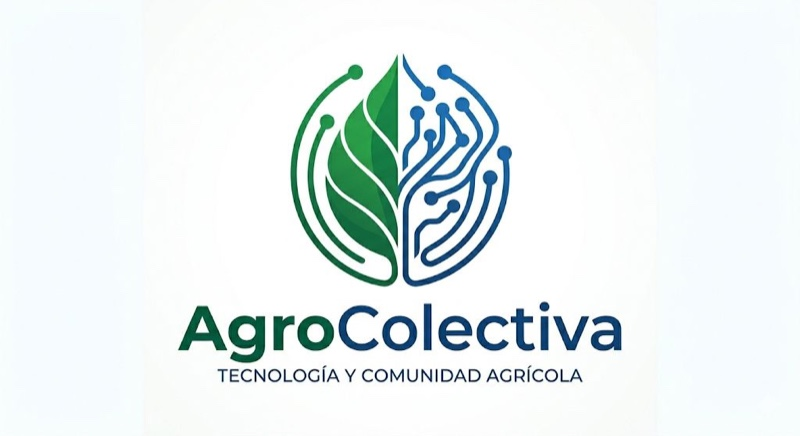

Agrocolectiva:
censos masivos
vía WhatsApp.
Plataforma propia para levantar cientos de miles de respuestas en territorios complejos, sin instalar nada en el celular del encuestado. Diseñada para el sector público mexicano.

Censar a millones
cuesta millones.
Las metodologías tradicionales requieren ejércitos de encuestadores, semanas en campo y meses de captura. Los resultados están disponibles cuando ya cambió el contexto político o económico.
Agrocolectiva propone una alternativa: usar la mensajería que ya tienen los hogares mexicanos para levantar datos en escala, con auditoría criptográfica y validación territorial supervisada.
No reemplaza el levantamiento territorial. Lo extiende a cien veces su cobertura por una fracción del costo, y entrega resultados en semanas, no en sexenios.
Tres pasos. Auditable de extremo a extremo.
Diseñar el censo
Construimos el cuestionario con tu equipo. Validamos lógica, ramificaciones y políticas de privacidad antes de enviar un solo mensaje.
Levantar en territorio
Censadores territoriales y mensajería WhatsApp recorren la cobertura objetivo. Tablero institucional en tiempo real para tu equipo.
Entregar evidencia
Cierre con dataset abierto, cadena de auditoría criptográfica y reportes ejecutivos defendibles ante auditoría superior.
Lo que ganas frente al
censo tradicional.
Cobertura masiva.
Llega a regiones donde el papeleo presencial no llega, sin sacrificar precisión muestral. Penetración cien veces mayor por la misma operación territorial.
Costo significativamente menor.
Por respuesta válida, frente a metodologías tradicionales puerta a puerta. La diferencia se mide en órdenes de magnitud, no en porcentajes.
Velocidad de operación.
Operaciones que tomaban un sexenio se cierran en un semestre. Datos disponibles antes de que cambie la administración o el contexto.
Aplicaciones verificadas.
Censos agropecuarios
Caracterización de unidades de producción y cadenas productivas regionales.
Padrones de beneficiarios
Validación, depuración y actualización de padrones de programas sociales.
Diagnóstico territorial
Caracterización de comunidades, hogares y unidades económicas a escala estatal.
Evaluación de políticas
Levantamiento ex-ante y ex-post para evaluaciones de impacto auditables.
Consulta pública
Mecanismo de consulta ciudadana con cobertura territorial verificable.
Estudios privados
Estudios sectoriales para cámaras, asociaciones, fundaciones y empresas.
Construido para
resistir auditoría.
RLS · MFA · rotación
Row Level Security en Postgres, autenticación multi-factor obligatoria, rotación criptográfica de claves de sesión.
Cadena hash
Cadena criptográfica de eventos. Trazabilidad extremo a extremo. Defendible ante auditoría superior.
Datos en MX
Infraestructura en México. Cumple LFPDPPP. Sin transferencia internacional de datos personales.
Control institucional
Tu institución mantiene control absoluto sobre los datos en todo momento. Export completo en cierre.